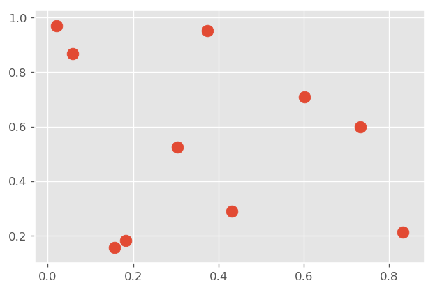

Python Data Science Handbook Notes
Table of Contents
1 IPython
1.1 Emacs
1.1.1 Completion on Windows
To get Emacs Python shell completion on Windows, install pyreadline. Then it just works.
1.1.2 Disable pager in Emacs
put this in ${HOME}/.ipython/profile_default/startup/no-pager.py
from __future__ import print_function def page_printer(data, start=0, screen_lines=0, pager_cmd=None): if isinstance(data, dict): data = data['text/plain'] print(data) import os TERM = os.environ.get('TERM', 'dumb') if TERM in ['emacs', 'dumb', 'xterm-color']: get_ipython().hooks.show_in_pager = page_printer
1.1.3 Format DataFrame as org table
put this in ${HOME}/.ipython/profile_default/startup/org-formatter.py
import IPython, sys from tabulate import tabulate class OrgFormatter(IPython.core.formatters.BaseFormatter): def __call__(self, obj): try: if 'pandas' in sys.modules: import pandas as pd else: return None if (type(obj) == pd.core.frame.DataFrame): return tabulate(obj, headers='keys', tablefmt='orgtbl') except: return None ip = get_ipython() ip.display_formatter.formatters['text/org'] = OrgFormatter()
1.2 Shell commands
All shell commands can be used with ! prefix. Results can be assigned to
python variables. ! functions run in temporary shell. % magic
functions has permanent effect. Many % magic functions can be used without
%, these are called automagic functions.
files = !ls
files
['notes.html', 'notes.org', 'obipy']
1.3 Debugger
%debug to enter debugger on last exception
1.4 Timing
%timeit- one line, may run multiple times for short functions%%timeit- works for multiple code lines, may run multple times%time- only run one time%%time- only run one time, multi line cell%prun- profile function call
2 NumPy
2.1 Array creating functions
np.zeros(10, dtype=int)np.ones((3,5), dtype=float)np.full((3,5), 3.14)np.arange(0, 20, 2)np.linspace(0, 1, 5)np.random.random((3, 3))np.random.normal(0, 1, (3, 3))normally distributed random valuesnp.random.randint(0, 10, (3, 3))np.eye(3)3x3 identity matrixnp.empty(3)uninitialized array
2.2 Array attributes
x3 = np.random.randint(10, size=(3, 4, 5)) print("x3 ndim", x3.ndim) # dimension print("x3 shape", x3.shape) # shape print("x3 size", x3.size) # total elements print("x3 dtype", x3.dtype) # array type print("x3 itemsize", x3.itemsize) # bytes per item print("x3 nbytes", x3.nbytes) # total bytes
x3 ndim 3 x3 shape (3, 4, 5) x3 size 60 x3 dtype int32 x3 itemsize 4 x3 nbytes 240
2.3 Array slicing
Slicing returns a view into the original. No copy is made.
x2 = np.random.randint(10, size=(3, 4))
x2
array([[9, 2, 3, 9],
[5, 5, 3, 6],
[1, 4, 9, 8]])
Extract 2x2
x2[:2, :2]
array([[9, 2],
[5, 5]])
Reverse
x2[::-1, ::-1]
array([[8, 9, 4, 1],
[6, 3, 5, 5],
[9, 3, 2, 9]])
Get column
x2[:, 0]
array([9, 5, 1])
Get row
x2[0, :]
array([9, 2, 3, 9])
To make a copy, use .copy()
x2[:2, :2].copy()
array([[9, 2],
[5, 5]])
2.4 Change dimension
With .reshape()
x = np.array([1,2,3]) x.reshape((1,3)) # make row vector
array([[1, 2, 3]])
x.reshape((3,1)) # make column vector
array([[1],
[2],
[3]])
Or with np.newaxis
x[np.newaxis, :]
array([[1, 2, 3]])
x[:, np.newaxis]
array([[1],
[2],
[3]])
2.5 Merging and splitting
Merging with np.concatenate(), np.vstack(), np.hstack()
np.concatenate([x2, x2]) # or np.vstack()
array([[9, 2, 3, 9],
[5, 5, 3, 6],
[1, 4, 9, 8],
[9, 2, 3, 9],
[5, 5, 3, 6],
[1, 4, 9, 8]])
np.concatenate([x2, x2], axis=1) # or np.hstack()
array([[9, 2, 3, 9, 9, 2, 3, 9],
[5, 5, 3, 6, 5, 5, 3, 6],
[1, 4, 9, 8, 1, 4, 9, 8]])
Split with np.split() , np.hsplit() , np.vsplit()
x = [1, 2, 3, 99, 99, 3, 2, 1] np.split(x, [3, 5]) # pass a list of split points
[array([1, 2, 3]), array([99, 99]), array([3, 2, 1])]
2.6 Specify output container
To avoid creating temporaries.
x = np.arange(5) y = np.empty(5) np.multiply(x, 10, out=y) y
array([ 0., 10., 20., 30., 40.])
This can even be used with array views. For example, we can write the results of a computation to every other element of a specified array:
y = np.zeros(10)
np.power(2, x, out=y[::2])
y
array([ 1., 0., 2., 0., 4., 0., 8., 0., 16., 0.])
2.7 reduce() and accumulate()
ufuncs supports reduce() and accumulate()
reduce() computes a final result.
x = np.arange(1, 6) np.add.reduce(x)
15
accumulate() saves all intermediate results.
np.add.accumulate(x)
array([ 1, 3, 6, 10, 15], dtype=int32)
2.8 Sort and index sort
np.sort() returns new copy of sorted array.
x.sort() sorts x in place.
np.argsort() returns sorted index array.
x = np.array([2,1,4,3,5])
np.sort(x)
array([1, 2, 3, 4, 5])
np.argsort(x)
array([1, 0, 3, 2, 4], dtype=int64)
2.9 Example: k-Nearest Neighbors
https://jakevdp.github.io/PythonDataScienceHandbook/02.08-sorting.html
- Create 10 random points.
- Compute the distance between each pair of points.
- Take the 2 left most columns.
np.random.seed(42) X = np.random.rand(10, 2) dist_sq = np.sum((X[:, np.newaxis, :] - X[np.newaxis, :, :]) ** 2, axis=-1) K = 2 nearest_partition = np.argpartition(dist_sq, K + 1, axis=1) plt.scatter(X[:, 0], X[:, 1], s=100) for i in range(X.shape[0]): for j in nearest_partition[i, :K+1]: # plot a line from X[i] to X[j] # use some zip magic to make it happen: plt.plot(*zip(X[j], X[i]), color='black')

3 Pandas
3.1 Series
Series is like strong typed dictionary.
Series supports indexing with keys: data['b']
And checking presence with operator in: 'a' in data
3.1.1 Constructing
data can be a scalar, which is repeated to fill the specified index:
pd.Series(5, index=[100, 200, 300])
100 5 200 5 300 5 dtype: int64
data can be a dictionary:
pd.Series({2:'a', 1:'b', 3:'c'})
1 b 2 a 3 c dtype: object
Explicitly specify index:
pd.Series({2:'a', 1:'b', 3:'c'}, index=[3, 2])
3 c 2 a dtype: object
In above example, 'b' is dropped, as 1 is not in the index.
3.2 DataFrame
Similar to Series, but 2D, where both rows and columns have generalized index.
It can be seen as a dictionary of column names to series.